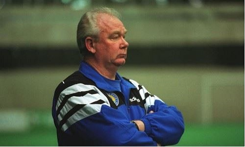
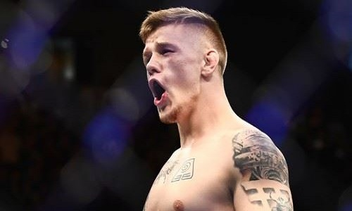
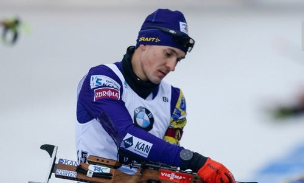
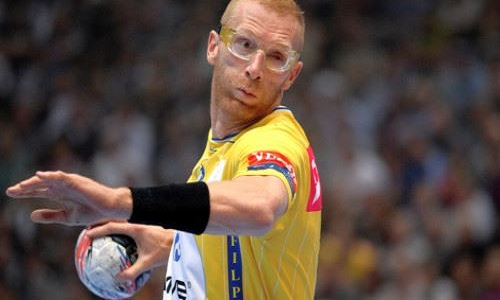

27-летний хавбек «Аталанты» Руслан Малиновский, который в текущем сезоне проводит не так много
времени на поле в составе своей команды, в январе может сменить клуб.
В услугах хавбека сборной Украины заинтересован миланский «Интер», который подыскивает доступные
варианты по усилению состава команды в январское трансферное окно.
News

Топ-10 тренерів Динамо усіх часів
Як зазначив колись Олексій Михайличенко, «роботу тренера «Динамо» в нас обговорюють більше, ніж
роботу президента країни». А обговорювати й було, й тепер є що! Столичний клуб упродовж усього
історичного шляху очолювали неординарні особистості. Й серед них були справжні футбольні
винахідники-раціоналізатори.

10 самых перспективных бойцов в ММА младше 25 лет
ММА, как и любой другой вид спорта, всегда нуждается в свежей крови. Нынешние топ-звезды не
всегда
будут править балом и рано или поздно их кто-то сменит.
Предлагаем вашему вниманию взглянуть на десятку проспектов, которые еще не отпраздновали свой
четвертьвековой юбилей и уже в 2021 году могут громогласно заявить о себе.

Камбэк Тищенко и Лесюка, коронавирус в сборных Чехии, России и Норвегии
После двух с половиной недель новогодней паузы, Кубок мира по биатлону возобновляется пятым
этапом
Кубка мира. Первый старт в новом году традиционно принимает немецкий Оберхоф, куда также
перенесен
из Рупольдинга и шестой этап.

Воин: гандболист лишился глаза, но продолжил карьеру и стал великим
Практически в каждой стране, где развит спорт высоких достижений, есть свои локальные герои,
имена
которых уже давно стали нарицательными у себя дома. В соседней Польше такими спортсменами
являются
два человека, один из которых гандболист Кароль Белецкий.